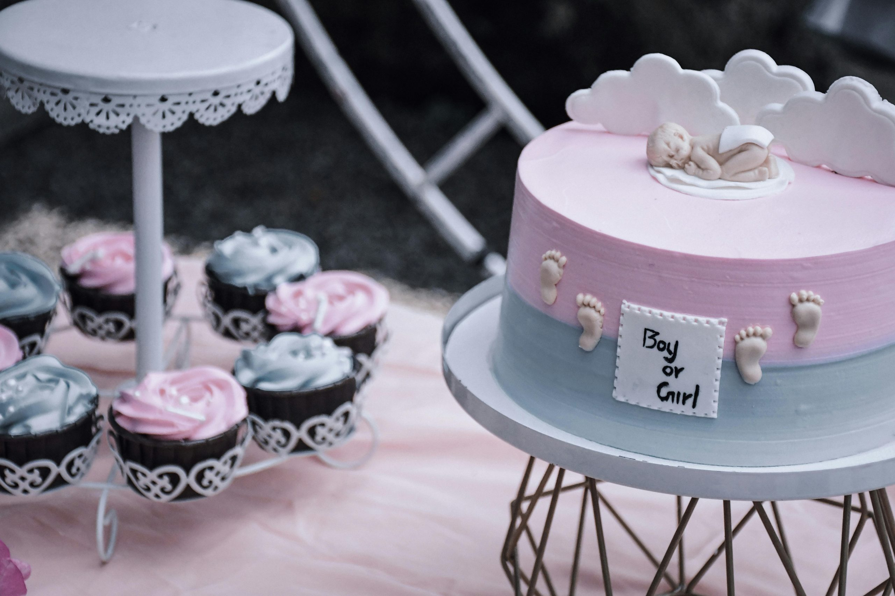

時下包養文化發展多元，不同於傳統戀愛關係。甜心與乾爹在現代社會擁有各自鮮明的期待與自主選擇。Sweet baby們重視生活品質與自我成長，而乾爹則希望找到欣賞、陪伴並互相關心的對象。包養網使這種雙向選擇變得更加方便且透明，雙方可以直接了解彼此需求，建立互惠的關係。
這樣的相處日常很真實，也很清晰。無論追求的是物質支持還是精神陪伴，核心始終是誠實和尊重。透過包養網，sugar daddy與sugar baby都能按照自己的生活方式，找到真正契合的人。
包養文化的起點：何謂Sugar Daddy與Sugar Baby
包養現象並非近年才有，其實在不同文化和時代早已有痕跡。每次社會變遷，都讓乾爹（sugar daddy）和甜心（sugar baby）的角色有新的意義。包養的本質在於「互惠」，雙方以自身需求和處境，坦承交換價值。以下帶您了解包養和傳統關係的不同，以及這種社會互動的內涵。
包養與傳統關係的差異
傳統戀愛多半建立在情感投契、認同和陪伴的基礎上，追求長遠付出與成長。而包養關係則更明確，雙方一開始就表達自身需求，包括經濟支持、情感陪伴或生活指導等內容。
主要差異包含：
- 互惠明確：乾爹提供資源，甜心回應陪伴或情感需求，雙方各取所需。
- 決策自主：甜心有權選擇合作與否，不受傳統價值綁架。
- 關係期限：包養可長可短，端看合約和信任程度。
- 社會觀感：傳統關係較受主流認同，包養則在灰色地帶，常遭誤解或標籤。
這種自由與契約式的相處，讓許多人看見感情以外的真誠交易。
乾爹與甜心的需求與動機
乾爹與甜心都來自不同背景，彼此的需求卻很明確。甜心（sugar baby）多半想要生活品質、經濟援助或成長機會。乾爹（sugar daddy）則追求年輕熱情、精神支持，或是有人陪伴消弭孤單。
常見動機如下：
- 甜心需求：
- 經濟支援：提升生活、水準或學業資源
- 自我成長：獲得人生經驗指引
- 精神陪伴：有人一起創造回憶、聊天分享
- 乾爹動機：
- 被欣賞感：希望有人尊重、肯定
- 心靈慰藉：減少孤獨或疲憊
- 與年輕一代交流，體驗不同生活
不同於單向給予，包養鼓勵雙方坦誠，也讓彼此更容易達成共識。
包養網的出現與影響: 討論網路平台對彼此角色認識和互動方式的改變
隨著網路和包養網盛行，包養文化迅速進入大眾視野。過往傳統難以啟齒的需求，透過安全、隱私的網路平台得以公開討論。
 Photo by Akshay Bineesh
包養網的出現，帶來幾個明顯變化：
- 角色更透明：甜心和乾爹都能公開說明自身條件和期待，不必拐彎抹角。
- 保護雙方權益：平台介面設有審核或隱私功能，用戶更安心發展關係。
- 互動更直接高效：溝通清楚、選擇自由，能夠快速找到契合對象。
- 群體概念：更多人勇於加入包養圈，形成自己認同的小社群。
這些影響不僅改變相遇方式，也讓更多人正視包養文化，逐步消弭既有刻板印象。透過包養網，包養變成一種可被討論、被尊重的選擇，塑造全新的人際圖像。
Sugar Daddy視角：如何定位自我與互惠期望
包養網上的「乾爹」角色，總是帶著神秘與討論話題。每位sugar daddy都抱著不同的想像進入這個圈子，有些人希望被體貼，有些則追尋年輕的活力。而包養其實遠不止於「提供支援」，它講究彼此尊重、界線清楚，同時也是一場雙方自我定位與成長的過程。
乾爹的身分與自我認識
對於乾爹來說，最重要的是清楚自己的角色與出發點。許多初入包養圈的人，都受過社會偏見的影響，例如認為「出錢就能掌控一切」。但真實上，sugar daddy的最佳身分定位應該是彼此互惠，以成熟、開放心態參與關係。
現實中，乾爹應該認識到：
- 個人需求明確：先想清楚自己要追求什麼，單純陪伴、情感交流或生活分享，都需要誠實面對內心。
- 責任意識：包養不是單向消費，關係中的溝通與信任同樣重要。
- 尊重彼此差異：甜心有自己的目標和界線，不應將包養等同於支配。
包養網讓身份更加透明，乾爹越能坦然接納本身渴望，也越能吸引到期待同樣明確的甜心。
資源分配與心態調整: 著重說明如何健康協商金錢、關係邊界
金錢與資源，往往是包養最敏感的議題。乾爹如果希望長久維持健康關係，需要主動溝通條件，並隨時檢視雙方感受。適當協商不僅保護自己，也讓整個過程更安心。
協商資源和關係邊界，建議注意以下幾點：
- 明訂內容：在包養網聯絡初期就講清楚預算範圍、見面頻率、可提供的支援內容。
- 保持平衡：適度給予，不強求甜心配合所有想法，也不要超出自己負荷。
- 尊重隱私：包養雙方可能還有自己的生活圈，不需要過度干涉或掌控。
- 適時調整：彼此需求會改變，必要時應重新討論協議，保持彈性。
對乾爹來說，心理健康同樣重要。如果只把金錢當作唯一交換條件，可能忽略情感層面。做到心態健康，才能避免不必要的誤會，讓彼此處在舒服的狀態，包養關係才能穩定成長。
包養互惠關係的建立與維持策略
永遠不要忽視：最好的包養關係是雙方都得到所需，內心也能平衡。乾爹如果希望和甜心建立舒適、互信的連結，可以從以下幾項原則著手：
- 誠實為本
任何需求、界線都應提前說明。不迴避敏感話題，也不做虛假承諾。 - 情感交流
包養不只是交付金錢，更是一種心靈連結。多主動關心甜心工作、生活情況，讓對話不流於表面。 - 尊重獨立性
雙方都該有自己的空間和人生，乾爹不應介入甜心私事或要求過度回報。 - 善用包養網工具
利用平台維護隱私和安全，及時反饋不適，也學習辨識潛在風險。
互惠不是公式，而是在互動中調整的結果。當乾爹願意用成熟、開放的態度去理解對方，也能吸收到許多新生活經驗，成為自己的一部分。包養網讓這條路更順暢，最終都回到那一句話：「好的關係，雙方都能自由選擇且各取所需。」
Sugar Baby視角：自我價值、界線與期望
風靡包養網的甜心角色，從來都不只是別人口中的「被選擇者」。sugar baby其實很清楚自己的價值與目標，她懂得保護自我，明確劃分界線，也在每次選擇前仔細權衡利弊。甜心的故事，是現代女性（或男性）追求自主、尊重與安全感的縮影。無論你是否曾考慮踏入包養圈，認識sugar baby的內心世界，有助於破除偏見，也讓包養文化能更健康被理解。
甜心的自我認識與界線設立
甜心的自我價值感，往往建立在自尊與自我認同之上。每位sugar baby都應該問自己：「我為什麼出現在包養網？我期望獲得什麼？」
- 自我價值的來源
不只是外表吸引人，更是因為甜心願意付出情感、精神陪伴和真誠。有人想追求經濟支援，也有人純粹渴望認識各行各業的人。 - 設立界線的必要性
甜心需釐清可接受的互動方式，比如約會頻率、溝通模式、是否公開彼此身份，甚至約會地點的選擇。這些界線能保護自身不被消耗或誤解。 - 學會說不
即使包養雙方早已談妥內容，如果遇到超出自身底線的要求，甜心也要勇敢拒絕。明確劃清界線，有時就是對自我最好的保護。
甜心的自信，來自於對自我需求的理解和界線的堅持。這份自知，讓她們能在包養關係中保持平衡。
Photo by Tahir Shaw
面對包養網與現實狀況的抉擇
進入包養網，甜心都會面臨不少現實考驗。這些選擇未必容易，但每一步都充滿學問。
- 自我審視
在點擊包養網「註冊」或開始與乾爹聯絡前，甜心需問清楚自己追求的是短期收益、長期成長，還是雙方心靈上的共鳴。 - 現實考量
包養看似美好，實際上伴隨不少壓力：是否會被親友發現？對原有生活有何影響？包養條件是否合理？ - 選擇對象的重要性
不是每位乾爹都適合自己。甜心懂得觀察乾爹的性格、價值觀和底線，判斷自己是否真的能夠自在相處。這種「選擇權」其實是甜心自我保護的第一道線。
包養網雖是平台，但選擇終究在自己手上。只有持續反思，才能找到真正的舒適點。
健康包養關係的自我保護方法
建立健康包養關係，甜心需懂得保護自己。這不單關於身體安全，更包括心理狀態與個人隱私。
幾個實用的自我保護小撇步：
- 資訊保密
不輕易透露住址、銀行帳號、真實全名等重要個資，避免出現惡意利用。 - 約會留意安全
穿插見面時可選公眾場合或有第三方在場，並通知可靠親友自己的行程。 - 善用平台審核
包養網多設有用戶審查、隱私保護機制。主動舉報可疑帳號，遇到威脅時勇敢停止聯絡。 - 心理健康守護
包養關係有時會遇到佔有、情緒勒索等情形。甜心應學會調適情緒，必要時尋求專業協助。 - 固定檢討並進步
遇到問題時，適時調整自己的策略或選擇，讓每段經驗都成為成長的養分。
包養文化強調自主和尊重，甜心學會自我保護後，能建立更成熟的包養觀念，也讓雙方關係充滿安全感與信任。
健康互惠關係的實踐原則與常見誤解
構築一段健康的包養關係，不只是金錢與陪伴的交換，也是一場關於尊重、自我保護和雙贏的練習。sugar daddy與sugar baby雙方都渴望安全感與被認可，卻常因期待落差或外界眼光迷失自己。要讓互惠變真誠，了解正確原則、辨識誤區，並善用包養網工具，成為每位甜心與乾爹的關鍵課題。
界線、溝通與尊重的重要性
每一段包養關係都需要明確的界線。乾爹與甜心須清楚討論彼此的底線和期望，像是一場提前擬定規則的遊戲。只有在一開始就表達清楚，才不會在後續的相處產生誤會。
建立互動原則可從這幾點下手：
- 明確設定界線
無論是見面次數、聯絡時間、個人隱私，雙方說清楚彼此能接受的範圍，省卻日後尷尬糾紛。 - 持續溝通
說出心裡話，遇上問題隨時討論。把彼此當作朋友，而非「只要錢」或「只需陪伴」的對象。 - 真心尊重
sugar daddy的關心不該被甜心視為理所當然，甜心的選擇權也不應被干擾。雙方尊重彼此生活，才有健康基礎。
這些原則很像生活的雙手，支撐起看不見的互信，讓包養關係走得更穩。
哪些誤解最容易讓人受傷
現實中，很多人對包養、包養網、sugar daddy或sugar baby都有想像與偏見，最常見的誤解往往帶來不必要的心靈碰撞。理解這些陷阱，有助於保護自己，也讓互惠更順暢。
常見傷害來源包括：
- 把包養視為「買賣」
許多乾爹或甜心會誤以為只要有金錢與陪伴就已經「成交」，忽略了彼此想要的還有溫度和尊重。這種誤解等同於彼此設下隔閡。 - 忽視界線
有些人覺得，既然進入包養，就可以隨意要求，打破對方原本設立的安全線，這是最常導致受傷的起點。 - 羞恥或社會標籤
外部輿論容易將包養網上的乾爹、甜心標籤為「物化」或「沒安全感」，導致雙方在關係裡自信心被脫空，進一步影響彼此互動。 - 期待不對等
如果某一方期待過高，或認為所有事情應由對方配合、犧牲，最終只會讓雙方壓力倍增，甚至導致結束。
這些誤解就像溼滑的地板，稍一疏忽就可能滑倒受傷。包養本質是互惠，也是成長，如果能清楚辨識，彼此都能減少摩擦。
善用包養網資源，打造優質關係
包養網讓甜心和乾爹的相遇變得簡單快速，但這只有起點。如果不善用資源，只會讓關係停留在表面。包養網上的工具和功能，其實能讓安全和信任更上層樓。
使用包養網資源建議：
- 充分利用平台審核與隱私保護
許多包養網都設有身份驗證、黑名單、匿名對話等功能。甜心可以更自在表達需求，乾爹則能放心篩選對象。 - 公開自我介紹與條件
主動寫下自己想要的條件、底線和興趣，不僅能過濾掉不適合的人，也讓誠實成為彼此相處的第一步。 - 及時反饋，防範風險
遇到不舒服的言語或行為，隨時可以聯繫客服或檢舉帳號，保障安全。 - 加入社群或互助討論區
很多包養網都有論壇，讓用戶交流經驗、提醒潛在的陷阱，幫助彼此成長。
包養關係真正的優質來自主動經營，而不是被動等待。善用包養網就像握上一把安全的鑰匙，糖衣裡也能享受真實與坦率的滋味。雙方在平台的幫助下，往往能找到令自己滿意又自在的甜蜜關係。
結論
包養、包養網、甜心與乾爹，每個角色都有鮮明的自我定位和明確的期待。健康的sugar daddy和sugar baby關係，來自雙方清楚自我、坦誠溝通與堅守界線。當自尊與尊重同時存在，互惠才能自然流轉，讓關係更紮實。
開放心態能打破偏見，也讓包養文化成為新世代的誠實選擇。每一次坦率的對話，都是推動彼此信任與成長的開始。邀請讀者以新的眼光理解包養，為屬於自己的幸福方式留下一道光。歡迎留下故事，一起讓這個話題更貼近生活與人心。